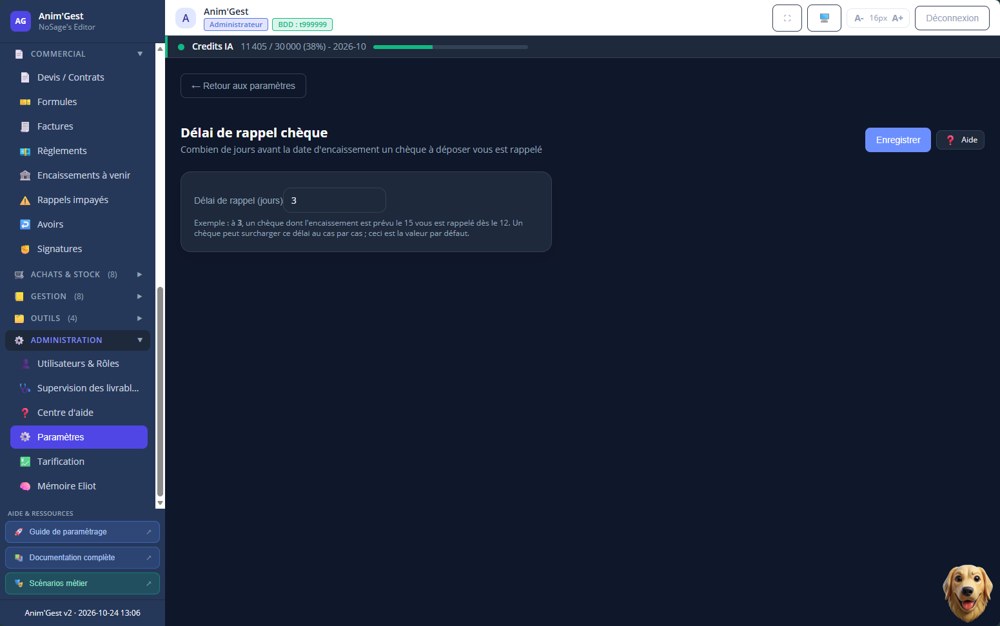

Délai de rappel chèque
Combien de jours avant l'encaissement prévu un chèque à déposer vous est rappelé. En cours de mise à jour
Cet écran règle combien de jours avant la date d'encaissement prévue un chèque à déposer vous est rappelé. Vous saisissez un nombre de jours, vous enregistrez, et ce délai devient la valeur par défaut de tous vos rappels de chèques. Au départ, le rappel arrive trois jours avant.
À quoi sert cet écran
Un chèque reçu attend souvent quelques jours avant d'être porté à la banque. Sans rappel, il dort dans un tiroir et la date d'encaissement passe. Ce réglage vous évite l'oubli : vous décidez une fois pour toutes à quel moment le logiciel vous signale qu'un chèque est à déposer, et il s'en charge ensuite pour chacun d'eux.
Régler le délai
Un seul champ : le nombre de jours, à partir de zéro. Par exemple, à 3, un chèque dont l'encaissement est prévu le 15 vous est rappelé dès le 12. Le bouton Enregistrer valide votre choix. Tant que vous n'avez rien enregistré, le logiciel applique sa valeur par défaut et vous le signale.
Ce délai est un défaut, pas une règle rigide : un chèque donné peut recevoir son propre délai, au cas par cas, sans rien changer à ce réglage général.
Ce que cet écran débloque
Le nombre de jours que vous fixez ici décide du moment où le rappel « chèque à déposer » apparaît, pour l'ensemble de vos chèques -- sauf ceux dont vous avez ajusté le délai individuellement. C'est lui qui fait qu'un chèque remonte à votre attention ni trop tôt, ni trop tard. Vous retrouvez ces rappels du côté du suivi des chèques à déposer.
